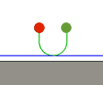
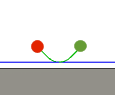

<div id="jet2d_exit_sweep"><p>退出円弧のスイープ角度を指定します。</p>
<table class="tipTable" cellspacing="10">
<tr>
<td><center></center></td>
<td><center></center></td>
</tr><tr>
<td><center><p><b>内角度: 90 度</b></p></center></td>
<td><center><p><b>内角度: 45 度</b></p></center></td>
</tr></table>
</div>